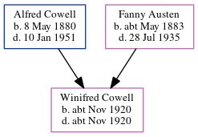

Winifred E Cowell cNov 1920 - c1920
[ Home ] | [ Calendar ] | [ Surnames Index ] | [ Errors ] | [ Family History ]The child of Alfred Cowell (a transport driver) and Fanny Austen, Winifred Cowell, the first cousin once-removed on the mother's side of Nigel Horne, was born in Thanet, Kent, England c. Nov 19201,2,3.
She died on the same day3,4.
Parents
- Alfred John was born on 8 May 1880
- Fanny was born c. May 1883
Citations
- England & Wales births 1837-2006 - Findmypast
- England & Wales, Birth Index: 1916-2005 Online publication - Provo, UT, USA: The Generations Network, Inc., 2008.Original data - General Register Office. England and Wales Civil Registration Indexes. London, England: General Register Office. © Crown copyright. Published by permission of the Cont
- England & Wales, Death Index: 1984-2005 Online publication - Provo, UT, USA: The Generations Network, Inc., 2007.Original data - General Register Office. England and Wales Civil Registration Indexes. London, England: General Register Office. © Crown copyright. Published by permission of the Cont
- England & Wales deaths 1837-2007 - Findmypast
Media
England & Wales births 1837-2006 - BMD/B/1920/4/AZ/000306/123
England & Wales deaths 1837-2007 - BMD/D/1920/4/AZ/000181/075
Family Tree
Map
Generated by ged2site. Last updated on Jul 3, 2024